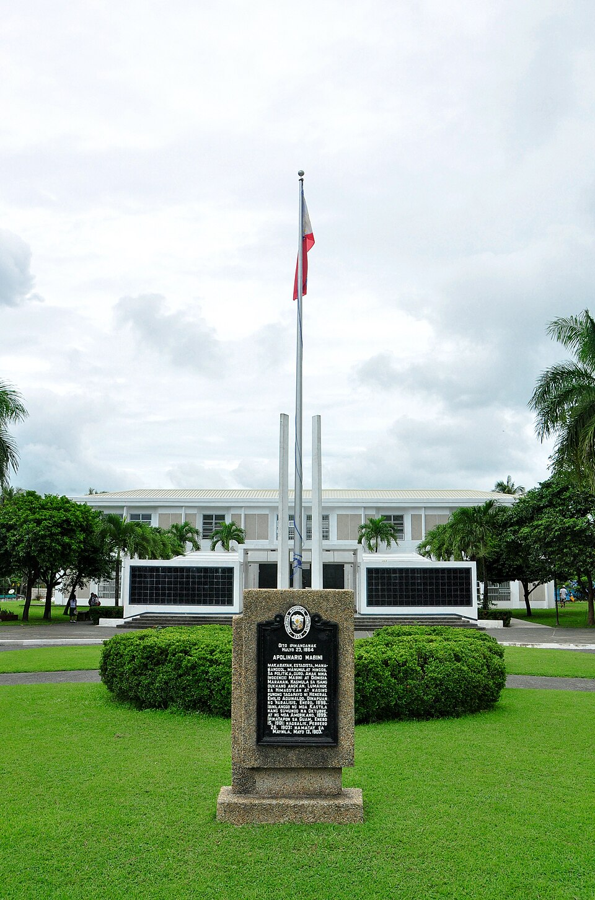

Apolinario Mabini
Apolinario Mabini y Maranán (Tagalog: [apolɪˈnaɾ.jo maˈbinɪ]; July 23, 1864 – May 13, 1903) was a Filipino revolutionary leader, educator, lawyer, and statesman who served first as a legal and constitutional adviser to the Revolutionary Government, and then as the first Prime Minister of the Philippines upon the establishment of the First Philippine Republic. He is regarded as the "utak ng himagsikan" or "brain of the revolution" and is also considered as a national hero in the Philippines. Mabini's work and thoughts on the government shaped the Philippines' fight for independence over the next century.

Apolinario Mabini Shrine
The Apolinario Mabini Shrine, nestled in the heart of Tanauan, Batangas, is a poignant tribute to one of the Philippines' national heroes, Apolinario Mabini. Known as the "Sublime Paralytic," Mabini played a crucial role in the Philippine Revolution against Spanish colonial rule despite being physically disabled. This historic site preserves his legacy, offering visitors a glimpse into his life and contributions to the country.
The shrine features a well-maintained museum housing a collection of Mabini's personal belongings, historical documents, and memorabilia that illustrate his remarkable journey as a statesman and a thinker. Visitors can explore the serene gardens surrounding the shrine, which provide a tranquil atmosphere for reflection and appreciation of Mabini's sacrifices for Filipino independence.
ㅤ
The shrine is not just a historical site; it also serves as an educational center, promoting awareness of Mabini's ideals of patriotism, justice, and integrity. Local guides offer insightful tours, sharing stories of his profound influence on Philippine history.
A visit to the Apolinario Mabini Shrine is a must for history enthusiasts and anyone seeking to understand the struggles and triumphs of the Filipino people. The shrine is open to the public and provides a perfect opportunity to honor the legacy of a true national hero while enjoying the beauty of Tanauan's landscape.